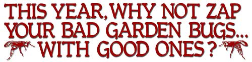
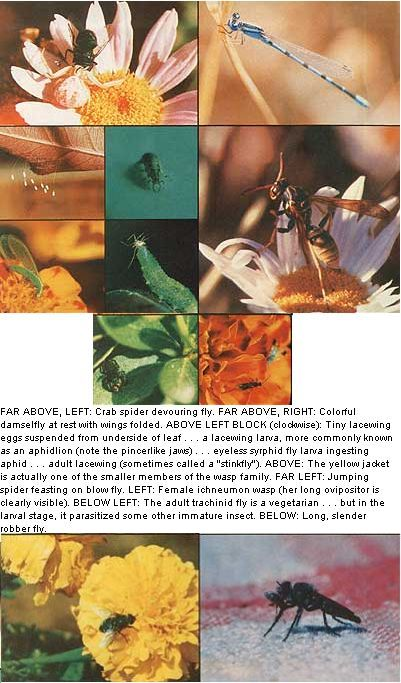
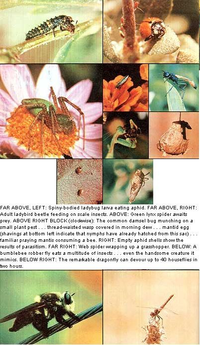

When it comes to controlling insect pests in the garden, you have basically two choices: [1] You can apply chemical pesticides . . . and hope that your health holds out longer than it takes the uninvited bugs to become resistant. [2] You can save your money, save your health, do a good turn for the planet, and boost your overall yields dramatically . . . by turning natural predators-including other insects!-loose on your unwanted garden visitors.
Once, not long ago-while I was inspecting my roses-I spied a tiny green insect creeping up one plant's stem. Though it was legless, the wormlike creature moved toward a nearby aphid colony with remarkable speed. Then, just short of the colony, it stopped . . . and-stretching its body forward quickly-the little beast took what looked like a blind swing at the aphids. To my surprise, contact was made on the first try. An aphid kicked and struggled as the legless (and apparently sightless) marauder wheeled it up high overhead. In a few moments, the invader flung its victim's shrunken skin aside and went after another aphid . . . then another . . . and another . . . until the entire colony was completely wiped out.
Meanwhile, it seemed that a tiny, gray, alligator-shaped insect had been patrolling another stem. This little beast-which had long, curved "pincers" at the front of its head-literally raced along until it spotted a lone aphid. Then-with startling fierceness-the "alligator" seized and pierced its victim with those hypodermic-needle pincers and refused to let go until the aphid's body was a mere shell.
I didn't know it at the time, but the first insect I'd observed was a syrphid fly larva (which-I learned-is indeed eyeless). And the little "alligator" that so aggressively scoured my rose bush was-I later learned a lacewing larva . . . more commonly known as an aphidlion. Both creatures, it turned out, had been voluntarily practicing biological control in my garden.
I'm now firmly convinced-after having studied my own backyard pest situation in some detail-that biological control (especially the eradication of "bad" insects by "good" ones) is the only way to go when it comes to zapping pests in the garden. By letting insects do the work of chemical pesticides, you not only save money (since pesticides are-as a rule-expensive) . . . but you [1] help conserve petroleum (the "raw material" from which many pesticides are made), [2] ensure your-and your family's-continued good health, and [3] do not needlessly pollute the biosphere.
And you don't need a degree in entomology to put biological control to work in your garden! The chances are excellent that-like me-you already have an armada of "beneficial" insects working away for you out there in the garden right now . . . and with a couple hours of practice, you should have no trouble telling these "good" bugs from the ones that spell trouble for your crops. (Even if you don't have any friendly insects in your vegetable patch-and that's unlikely-you can import some. See the list of "insect livestock suppliers" which accompanies this article.)
Right now, let's talk about which "biological control" insects you should look for in (and/or add to) your garden, and why they're so valuable . . . beginning with one of the most beneficial-and familiar-insects of all.
Ladybugs-or ladybird beetles-are among the most widely distributed and (for the gardener) most beneficial of all insects. The mature ladybug-with its distinctive bright red, hemispherical shell-is a familiar sight to most gardeners. The ladybug larva, on the other hand, is a bit less familiar to most folks. Look for a mostly blackish, spiny-bodied little beast with six short legs and (depending on the species) brilliant red, blue, or yellow spots.
Both the adult and the larval ladybug eat two and a half times their own weight in aphids, mealybugs, moth eggs, spider mites, and/or scale insects each and every day of their lives. (A single ladybird larva will-before it pupates into an adult beetle-consume a total of 90 mature and 3,000 juvenile scale insects.) Even more impressive is the fact that ladybirds-because they taste bad and give off a disagreeable (to other bugs) odor-aren't preyed upon by other insects.
Obviously, ladybird beetles are nice "pets" to have around!
Any insect that can devour 40 houseflies in two hours-and the dragonfly can-is definitely a "beneficial" insect. The same goes for the damselfly, a very close relative of the dragonfly that differs only in size and repose. (Damsels are smaller and rest with their wings folded, as opposed to the dragonfly's wings-outstretched posture.)
Chances are, you'll miss seeing these swift-moving insects in action . . . because nature equipped both dragonflies and damselflies with wings to propel them at unbelievable speeds (they've been clocked at 60 miles per hour). These remarkable insects also have enormous eyes (each of which contains more than 20,000 lenses) that can spot moving objects 60 feet away . . . and long, spiny legs to aid in catching and eating their prey in flight.
Damselflies and dragonflies are predaceous in all stages of their development and feed mainly upon flies and mosquitoes . . . two of the peskiest of all insect pests. If you live near a pond where damsels or dragons thrive, consider yourself fortunate to have these fast-flying fellows around.
Sometime-to really gain an appreciation for how skillfully some insects work-you should observe a praying mantis in action. This handsome insect will sit quietly poised on a stem-body erect, head bent forward, front legs meekly folded in supplication-until a grasshopper (or other prey) approaches. Then the mantid-tilting its head ever so slightly to keep a constant watch on the approaching prey-will wait patiently for the victim to move closer. And-finally!-the tall, green insect suddenly thrusts its spiny forelegs out to clasp the grasshopper in a viselike grip! From that point on, the grasshopper is doomed.
The nice thing about mantids is that they'll adapt to virtually any setting and eat anything that moves. Although their favorite foods are flies and grasshoppers, you'll find that praying mantises will-from time to time-also consume aphids, leafhoppers, white grubs, beetles, chinch bugs, and several species of caterpillars.
Because of the disagreeable (to humans) odor that they sometimes give off, lacewings are often referred to as "stinkflies". In the adult stage, these fragile-looking, light-green insects are primarily nectar lovers (although some are known to be carnivorous) and are thus of little importance as agents of biological control. The lacewing's larvae -otherwise known as aphidlions -however, are a boon to the gardener: They have a gluttonous appetite not only for aphids but for mealybugs, mites, leafhoppers, thrips, moth eggs, bollworm larvae, whiteflies, and scale insects.
If you should discover lacewing eggs in your garden (look for very tiny, ovoid eggs suspended on threadlike stalks, usually on the undersides of leaves), count yourself lucky!
The small, brownish-gray damsel bug (a close relative of the ambush and pirate bugs) is a common inhabitant of fields, orchards, and gardens everywhere. (Look for them in the shadows of leaves or flower petals.) Don't let these insects' small size fool you: They'll more than do their part to keep aphids, leafhoppers, lygus bugs, spider mites, treehoppers, and small caterpillars in check in your pea patch.
It may come as a surprise to you to learn that the fly family has many beneficial (to gardeners) members . . . but it's true. Three types of flies, in particular, merit special attention: the syrphids, the tachinids, and the robbers.
Syrphid flies-commonly known as hover flies or flower flies-resemble bees more than they do ordinary flies . . . and-like bees-adult syrphids live entirely on flower nectar and honeydew. Syrphid fly larvae, on the other hand, are "meat-eaters": They have voracious appetites for aphids, scale insects, and other soft-bodied bugs. A single syrphid fly larva will, in fact, easily consume an aphid a minute, given the opportunity. (Not bad, considering the larva's small size and total lack of sight organs! )
Adult tachinid flies-which (at first glance) look like overgrown houseflies-spend most of their time buzzing from flower to flower, and sipping nectar like bees . . . since, as adults, they're strict vegetarians. Every mature tachinid, however, passed its larval stage as an internal parasite of some other kind of larva . . . such as that of a butterfly, moth, grasshopper, army worm, bollworm, wood louse, or centipede. (In Hawaii, one species of tachinid larva has been successfully employed as a biological control against the troublesome sugarcane weevil.)
Robber flies can be recognized by their whiskered faces, long, spindly legs, and (usually) long abdomens. (Some have broad, hairy bodies and look very much like bumblebees.) Probably the only time you'll see these strong fliers is when they've landed on a leaf or stem to eat right after they've made their catch. On the menu: anything from grasshoppers, flies, beetles, dragonflies, bees, and wasps to the bumblebees these handsome insects mimic.
Like the fly family, the wasp family contains both predators and parasites. Among the food insects that the large, predatory adult wasps catch to feed to their young are houseflies, blowflies, moth caterpillars, army worms, and corn earworms.
Aphids are also attacked by wasps, but in a different way: Watch an aphid colony long enough, and you're bound to see a very tiny female wasp carefully deposit an egg with her long ovipositor into the body of one of the little sapsuckers. When the larva hatches, it'll feed off its aphid host.
A variety of worms and caterpillars are also parasitized by wasps. If you happen to notice small, white, oblong objects on a tomato hornworm's back-for instance-you're looking at the cocoons of the braconid wasp's larvae. (Eventually, these cocoons will completely devour the hornworm.) Braconids also parasitize corn borers, various butterflies and moths, birch leaf-mining sawflies, wood-boring beetles, bark beetles . . . even ants. In every case, the parasitized pest insect is killed before it can do damage to its host plant.
Several species of tiny wasps are raised commercially for their pest control (i.e., parasitism) value. These wasps include:
TRICHOGRAMMA WASPS: Collectively, the various members of this group lay their eggs inside the eggs of more than 200 insect pests, including those of bollworms, leafworms, fruitworms, cutworms, army worms, cane borers, and most moths and butterflies.
FLY PARASITES: Maggots are the target of this group, which means that feedlots, poultry ranches, dairies, animal pens-anyplace where the common fly breeds-can benefit from having these parasitic wasps around. (It is estimated that the wasps in this category can destroy up to 95% of the developing maggots in a given locale in one season.)
SCALE PARASITE: This extremely tiny wasp (species designation unknown) lays its egg right under the scale that scale parasites secrete to protect themselves. The developing wasp larva then attacks the scale insect's body directly. Although this wasp primarily parasitizes the California red scale, it'll also attack a number of tree-loving scale insects.
Though they're technically arachnids, and not insects, spiders are-nonetheless-probably the most important "biological control insects" you'll find in your garden. Like mantids, spiders will adapt to a variety of settings and feast on just about every kind of insect that happens by.
Spiders come in all shapes, sizes, and colors. Some weave webs . . . others constantly stalk the soil and surrounding vegetation for prey. Some varieties-such as the crab and orb spiders-openly sit and wait for their victims . . . others (the majority of spiders, in fact) are elusive and prefer to remain "under cover" until their food comes along.
Closely related to spiders are the mites, which also technically fall into the "arachnid" classification. Here, the gardener has three true friends: the greenhouse mite, the Pacific mite, and the Willamette mite . . . all of which feed on the much-cursed spider mite.
There are, of course, many other "biological control insects" that you'll learn about once your eyes have been opened to this method of zapping the pests in your garden. (Ground beetles, for instance, feed on cutworms, army worms, grasshoppers, snails, and slugs in both the larva and adult stage . . . and they do their best work at night, when you're slumbering in bed.) The ones shown and described in detail here, however, are quite a sufficient introduction to some of the beneficial predators that can do so much good for your vegetable patch. If you succeed only in encouraging the ladybugs, mantises, flies, spiders, etc., listed above, you'll be way ahead of garden pests during the coming summer.
Biological control does not mean eliminating all insect pests from your garden. (Obviously, you can't expect the "good" insects to survive without any "bad" insects to feast on.) What it does mean is the establishment and maintenance of a critical balance between the number of plants, friendly insects, and insect pests in your vegetable patch.
To achieve this natural balance, you may well have to "import" a rather large number and variety of predatory and parasitic insects to your garden at first. For instance, ladybird beetles alone may not prove capable of keeping aphids under control . . . but a combination of ladybugs, lacewings, and parasitic wasps might do the trick. Eventually, of course, as the pest population in your garden decreases to a normal "low" level, so will the population of pest-control insects.
To maintain this delicately balanced ecosystem, you'll need to make a concerted effort to keep the "friendly" insects in your garden. Follow three simple rules, and you should have no problem:
[1] Provide water. (Most insects need at least one drink a day.)
[2] Plant many different kinds of plants. A variety of flowering plants, vegetables, and fruit trees will do the best job of providing the pollen, nectar, and honeydew your insect friends need.
[3] Plant new crops for each season of the year. By rotating crops year round (as many farmers do), you'll find that beneficial insects are more likely to remain in your garden and pests less likely to get out of hand.
It's easy-when you're constantly confronted by examples of the damage that insects can do-to lose sight of the fact that insects (in their various forms) comprise about 85% of all the living creatures on this earth, plants and other organisms notwithstanding . . . just as it's easy to forget that of all the insects in the world, only one percent fall into the "pest" category.
Given these facts, doesn't it make sense to stop thinking of all insects as "bad"-to stop using chemical pesticides (which kill beneficial insects along with the pests)-and, instead, to start giving "good" insects their due? Don't put it off any longer. Give biological control a try this year. I think you'll be glad you did.
If you've always thought that insects belong outside-not inside-the home . . . you're right. Most insects do belong outside. Some kinds of bugs, however, can prove to be exceedingly useful indoor companions.
Mantises-for instance-will quietly (almost shyly) scour your home for insects. These fine creatures come the closest of all insects to being true pets: They'll learn to drink water from your spoon and even take raw meat-or live food-from your hand.
Likewise, house centipedes can do a good job of keeping damp, dark basements free of insect pests. (You won't find many roaches, flies, or clothes moths in your dwelling if there are house centipedes around.)
Spiders tend to find their way indoors whether we want them around or not . . . but that's just as well. In the first place, spiders are less apt to bite you than you might think . . . and-except in the case of the black widow or the brown recluse-spider venom isn't very poisonous anyway (unless you're allergic to it). Second, these elusive eight-legged creatures can really keep a house free of flies, moths, and mosquitoes. So the next time you see a spider in your house, either look the other way (chances are you'll never see it again) or gently scoop the critter up and place it outside on a plant. But for heaven's sake don't kill this best friend you ever had!- RS.
|
 |
 |
 |